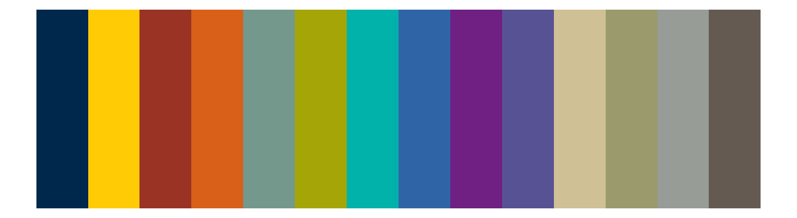
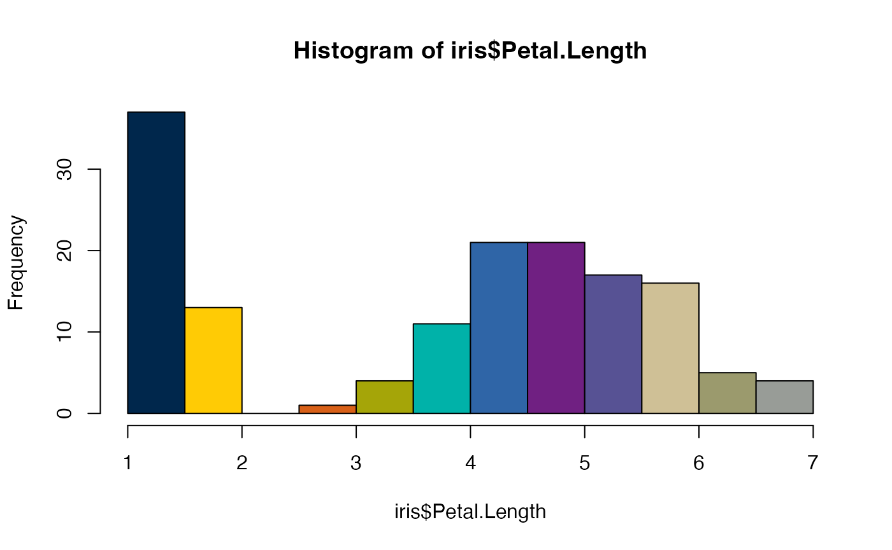
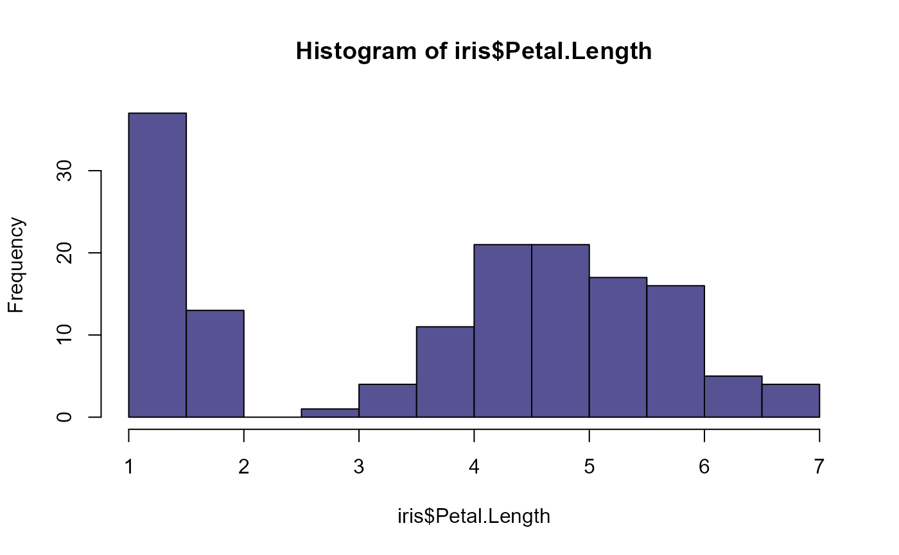
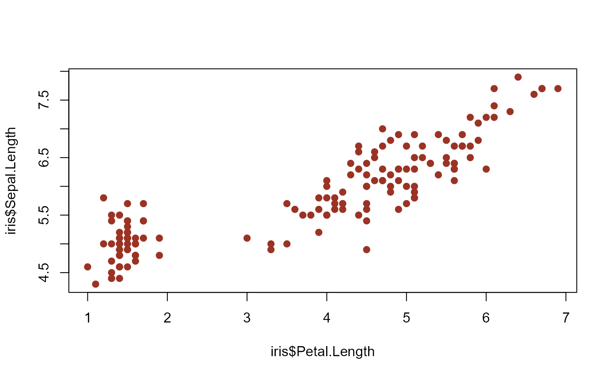
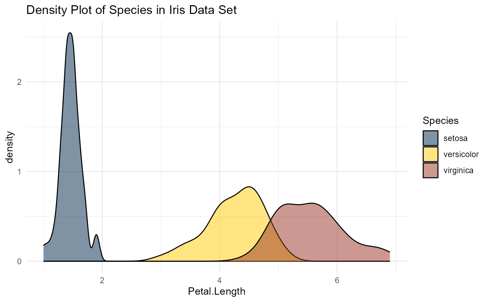
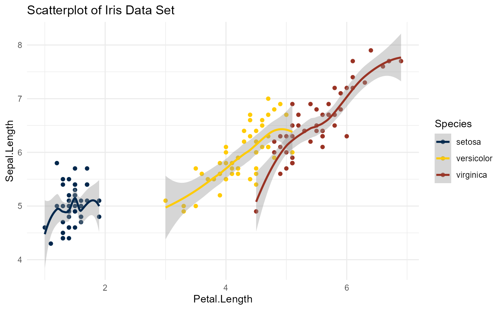
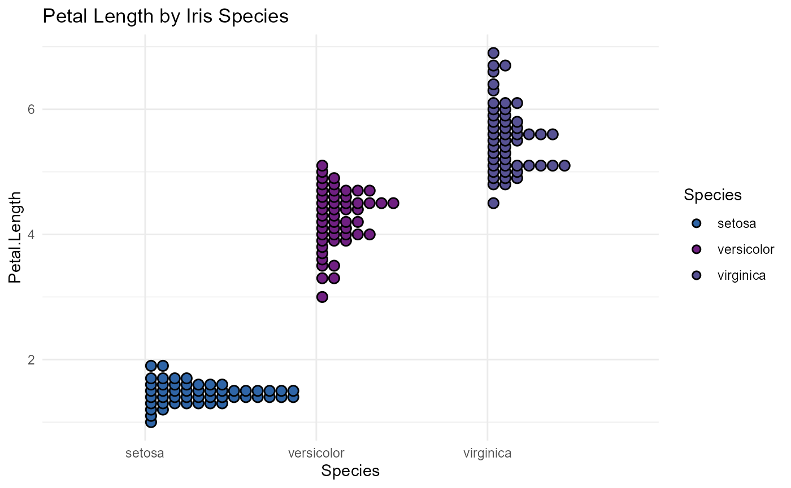

Installation
You will need to install devtools if you have not
already done so:
install.packages("devtools")Then use devtools to install
michigancolors.
devtools::install_github("agrogan1/michigancolors")Allowable Colors
Colors are drawn from https://brand.umich.edu/design-resources/colors/.
Allowable colors are: “blue”, “maize”, “tappan red”, “ross school orange”, “wave field green”, “taubman teal”, “arboretum blue”, “ann arbor amethyst”, “matthaei violet”, “umma tan”, “burton tower beige”, “angell hall ash”, and “law quad stone”
Help
help(michigancolors)Examples
Base R
Entire Palette Of Colors
hist(iris$Petal.Length, col = michigancolors())
hist(iris$Petal.Length,
col = michigancolors(),
main = "Petal Length of Iris Flowers",
xlab = "Petal Length")Specific Color
hist(iris$Petal.Length, col = michigancolors("matthaei violet"))
plot(iris$Petal.Length,
iris$Sepal.Length,
pch = 19,
col = michigancolors("tappan red"))
ggplot2
Entire Palette Of Colors
ggplot(iris,
aes(x = Petal.Length,
fill = Species)) +
geom_density(alpha = .5) +
labs(title = "Density Plot of Species in Iris Data Set") +
theme_minimal() +
scale_fill_manual(values = michigancolors())
ggplot(iris,
aes(x = Petal.Length,
y = Sepal.Length,
color = Species)) +
geom_point() +
geom_smooth() +
labs(title = "Scatterplot of Iris Data Set") +
theme_minimal() +
scale_color_manual(values = michigancolors())
#> `geom_smooth()` using method = 'loess' and formula = 'y ~ x'
Specific Colors
library(ggdist) # distribution plots
ggplot(iris,
aes(x = Species,
y = Petal.Length,
fill = Species)) +
geom_dots(dotsize = 3, # dot size
color = "black") + # outline color
labs(title = "Petal Length by Iris Species") +
theme_minimal() +
scale_fill_manual(values = c(michigancolors("arboretum blue"),
michigancolors("ann arbor amethyst"),
michigancolors("matthaei violet")))